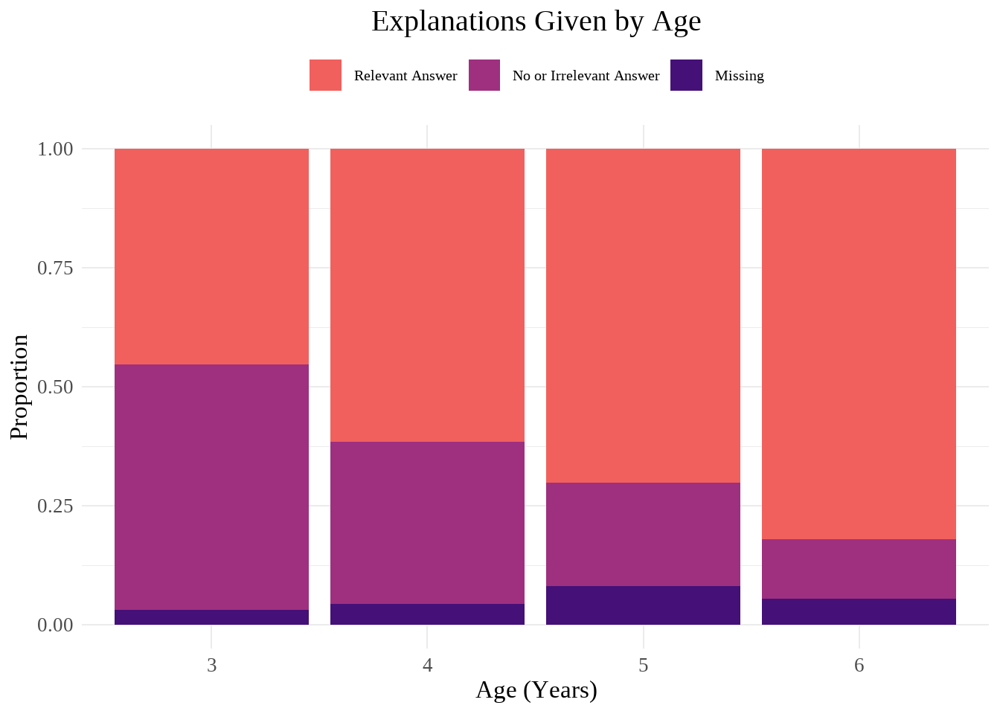
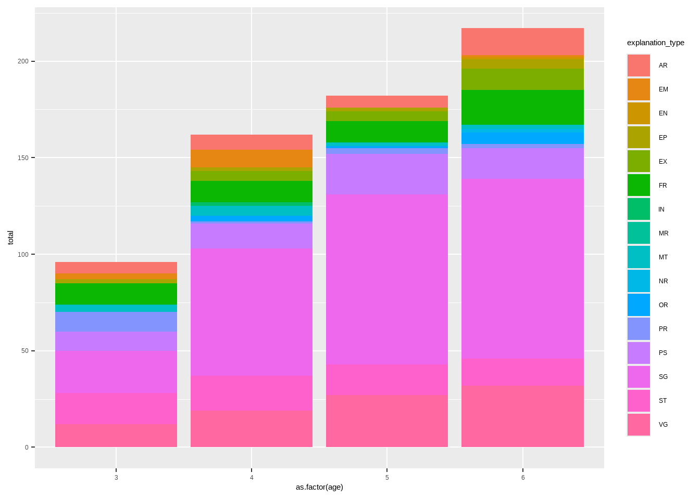
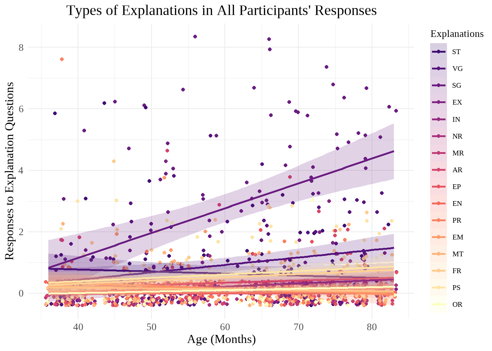
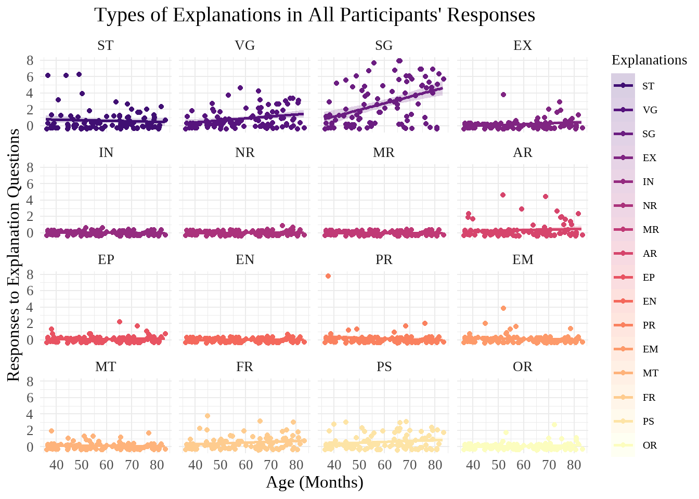
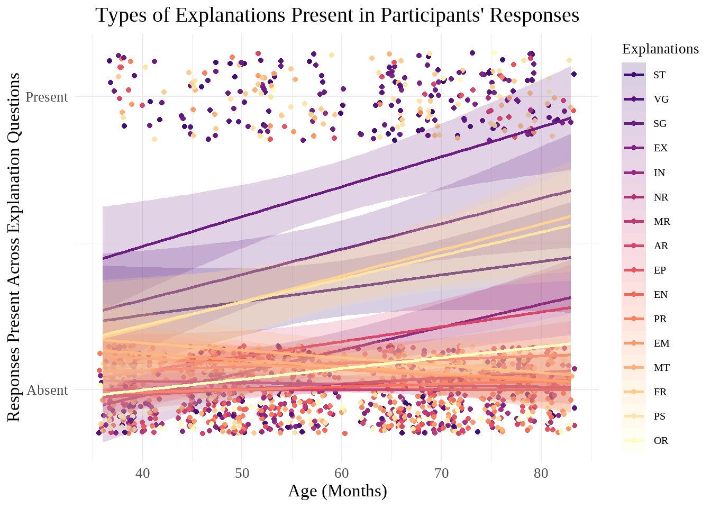
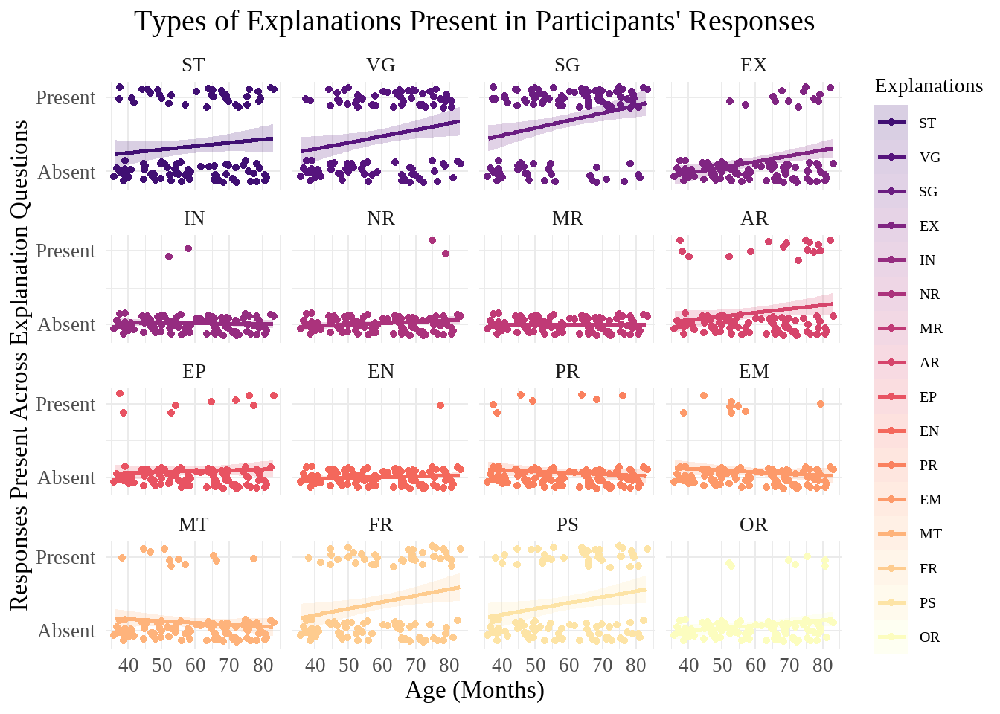
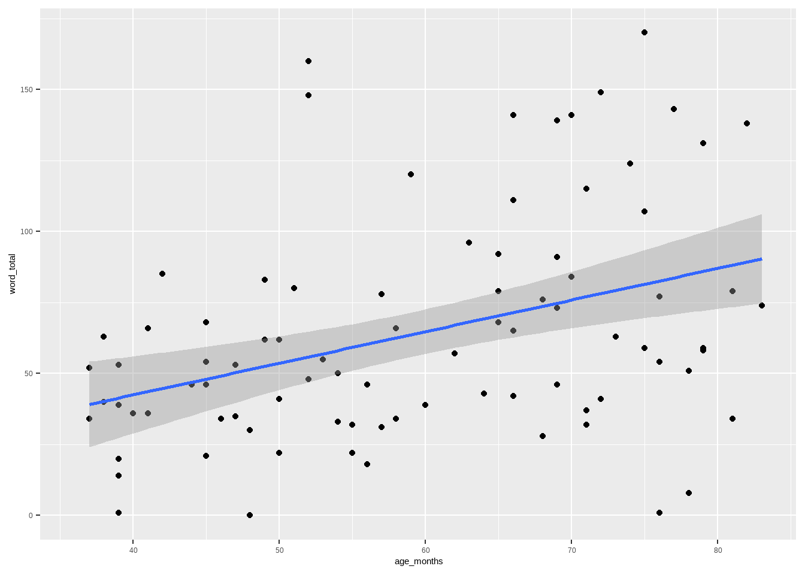

library(readxl)
library(tidyverse)
library(lme4)
library(lmerTest)
library(showtext)
library(viridis)
showtext_auto()02 SEAS Study 1 Exploratory Analyses
Packages
Data Preparation
magma_colors <- c("#000004FF", "#180F3EFF", "#451077FF", "#721F81FF", "#9F2F7FFF", "#CD4071FF", "#F1605DFF", "#FD9567FF", "#FEC98DFF", "#FCFDBFFF") #from magma(10)seas_full <- read_excel("../Data/FINAL SEAS V1 Dataset.xlsx")
seas <- filter(seas_full, final_data == "Y") #filtering out excluded participantsseas <- seas |>
mutate(
DOB = make_date(birth_year, birth_month, birth_day), #creating date of birth and date of test columns
DOT = as_date(DOT),
.before = DOT
) |>
mutate(
age_months = interval(DOB, DOT) %/% months(1), .after = DOT #calculating age in months
)#Converting explanation data to numerical
seas_united <- seas |>
unite("status_explain_1", status_storyref_1:status_relation_1, sep = " ", na.rm = TRUE) |>
unite("resource_explain_1", resource_storyref_1:resource_relation_1, sep = " ", na.rm = TRUE) |>
unite("status_explain_2", status_storyref_2:status_relation_2, sep = " ", na.rm = TRUE) |>
unite("resource_explain_2", resource_storyref_2:resource_relation_2, sep = " ", na.rm = TRUE) |>
unite("status_explain_3", status_storyref_3:status_relation_3, sep = " ", na.rm = TRUE) |>
unite("resource_explain_3", resource_storyref_3:resource_relation_3, sep = " ", na.rm = TRUE) |>
unite("status_explain_4", status_storyref_4:status_relation_4, sep = " ", na.rm = TRUE) |>
unite("resource_explain_4", resource_storyref_4:resource_relation_4, sep = " ", na.rm = TRUE)#Creating a general explanation mapping function
individual_explain_func <- function(status_or_resource, trial_num) {
possible_explain <- c("ST", "VG", "SG", "EX", "IN", "NR", "MR", "AR", "EP", "EN", "PR", "EM", "MT", "FR", "PS", "OR")
column_of_interest <- paste0(status_or_resource, "_explain_", trial_num)
list_of_dfs <- purrr::map(possible_explain, function(explain) {
seas_united |>
mutate(!!paste0(status_or_resource, "_", explain, "_", trial_num) := if_else(str_detect(.data[[column_of_interest]], explain), 1, 0))
})
selected_cols <- map(list_of_dfs, ~select(., subject, last_col()))
reduce(selected_cols, left_join, by = "subject")
}#Gathering individual explanation columns for each response
seas_status_1 <- individual_explain_func("status", 1)
seas_resource_1 <- individual_explain_func("resource", 1)
seas_status_2 <- individual_explain_func("status", 2)
seas_resource_2 <- individual_explain_func("resource", 2)
seas_status_3 <- individual_explain_func("status", 3)
seas_resource_3 <- individual_explain_func("resource", 3)
seas_status_4 <- individual_explain_func("status", 4)
seas_resource_4 <- individual_explain_func("resource", 4)
#Combining back into one dataframe
seas_separated <- seas_united |>
left_join(seas_status_1, by = "subject") |>
left_join(seas_resource_1, by = "subject") |>
left_join(seas_status_2, by = "subject") |>
left_join(seas_resource_2, by = "subject") |>
left_join(seas_status_3, by = "subject") |>
left_join(seas_resource_3, by = "subject") |>
left_join(seas_status_4, by = "subject") |>
left_join(seas_resource_4, by = "subject")seas_separated <- seas_separated |>
rowwise() |>
mutate(
ST_total = sum(c_across(matches(".*_ST_."))),
VG_total = sum(c_across(matches(".*_VG_."))),
SG_total = sum(c_across(matches(".*_SG_."))),
EX_total = sum(c_across(matches(".*_EX_."))),
IN_total = sum(c_across(matches(".*_IN_."))),
NR_total = sum(c_across(matches(".*_NR_."))),
MR_total = sum(c_across(matches(".*_MR_."))),
AR_total = sum(c_across(matches(".*_AR_."))),
EP_total = sum(c_across(matches(".*_EP_."))),
EN_total = sum(c_across(matches(".*_EN_."))),
PR_total = sum(c_across(matches(".*_PR_."))),
EM_total = sum(c_across(matches(".*_EM_."))),
MT_total = sum(c_across(matches(".*_MT_."))),
FR_total = sum(c_across(matches(".*_FR_."))),
PS_total = sum(c_across(matches(".*_PS_."))),
OR_total = sum(c_across(matches(".*_OR_."))),
) |>
ungroup() #Pivoting explanation type
seas_pivoted <- seas_separated |>
pivot_longer(ST_total:OR_total, names_to = "explanation_type", names_pattern = "(..)_total", values_to = "total")#some exploration of frequency of each type of explanation
seas_pivoted |>
group_by(explanation_type) |>
summarize(
max = max(total),
min = min(total),
mean = mean(total)
)# A tibble: 16 × 4
explanation_type max min mean
<chr> <dbl> <dbl> <dbl>
1 AR 5 0 0.343
2 EM 4 0 0.131
3 EN 1 0 0.0101
4 EP 2 0 0.111
5 EX 4 0 0.212
6 FR 4 0 0.515
7 IN 1 0 0.0202
8 MR 0 0 0
9 MT 2 0 0.131
10 NR 1 0 0.0202
11 OR 3 0 0.101
12 PR 8 0 0.162
13 PS 3 0 0.606
14 SG 8 0 2.72
15 ST 6 0 0.646
16 VG 5 0 0.909 Basic Answer Categorization
Graphs
seas |>
pivot_longer(
cols = contains("response"),
names_to = "trial",
values_to = "response"
) |>
# group_by(response) |>
# summarize(n = n())
ggplot(aes(x = as.factor(age), fill = fct_rev(response))) +
geom_bar(position = "fill") +
scale_fill_manual(
values = c(magma_colors[7], magma_colors[5], magma_colors[3]),
labels = c("Relevant Answer", "No or Irrelevant Answer", "Missing")
) +
labs(
title = "Explanations Given by Age",
x = "Age (Years)",
y = "Proportion",
fill = NULL
) +
theme_minimal() +
theme(
plot.title = element_text(hjust = 0.5, size = 30),
legend.title = element_text(size = 20),
legend.text = element_text(size = 15),
legend.position = "top",
text = element_text(family = "serif", size = 25)
)
Analyses
seas_response_contingency <- seas |>
pivot_longer(
cols = contains("response"),
names_to = "trial",
values_to = "response"
) |>
count(response, age) |>
pivot_wider(
names_from = age, values_from = n, values_fill = 0L
) |>
select(-response) |>
as.matrix()
seas_response_chi <- chisq.test(seas_response_contingency)
seas_response_chi
Pearson's Chi-squared test
data: seas_response_contingency
X-squared = 80.851, df = 6, p-value = 2.384e-15Significant. What post-hoc test should we use?
Number of Times a Ppt Used Explanation Across Each Response (0-8)
Graphs
#column chart to see the total number of each type of explanation category participants used across their 8 explanation questions (explain better; can use multiple types of explanation in one response, but using that explanation in response will only be counted once for each question--i.e. maximum for each category is 8)
seas_pivoted |>
ggplot(aes(x = as.factor(age), y = total, fill = explanation_type)) +
geom_col()
#Scatterplot of explanation types across age
wo_black <- viridis::magma(20)[5:20]
seas_pivoted |>
mutate(
explanation_type = fct_relevel(explanation_type, "ST", "VG", "SG", "EX", "IN", "NR", "MR", "AR", "EP", "EN", "PR", "EM", "MT", "FR", "PS", "OR")) |>
ggplot(aes(x = age_months, y = total, color = explanation_type, fill = explanation_type)) +
geom_jitter() +
geom_smooth(method = "lm", alpha = 0.2) +
scale_fill_manual(values = wo_black) +
scale_color_manual(values = wo_black) +
labs(
title = "Types of Explanations in All Participants' Responses", #better title/explain better
x = "Age (Months)",
y = "Responses to Explanation Questions",
color = "Explanations",
fill = "Explanations"
) +
theme_minimal() +
theme(
plot.title = element_text(hjust = 0.5, size = 30),
legend.title = element_text(size = 20),
legend.text = element_text(size = 15),
text = element_text(family = "serif", size = 25)
)`geom_smooth()` using formula = 'y ~ x'
seas_pivoted |>
mutate(
explanation_type = fct_relevel(explanation_type, "ST", "VG", "SG", "EX", "IN", "NR", "MR", "AR", "EP", "EN", "PR", "EM", "MT", "FR", "PS", "OR")) |>
ggplot(aes(x = age_months, y = total, color = explanation_type, fill = explanation_type)) +
geom_jitter() +
geom_smooth(method = "lm", alpha = 0.2) +
facet_wrap(~explanation_type) +
scale_fill_manual(values = wo_black) +
scale_color_manual(values = wo_black) +
labs(
title = "Types of Explanations in All Participants' Responses", #better title/explain better
x = "Age (Months)",
y = "Responses to Explanation Questions",
color = "Explanations",
fill = "Explanations"
) +
theme_minimal() +
theme(
plot.title = element_text(hjust = 0.5, size = 30),
legend.title = element_text(size = 20),
legend.text = element_text(size = 15),
text = element_text(family = "serif", size = 25)
)`geom_smooth()` using formula = 'y ~ x'
Analyses
summary(lmer(
total ~ age_months + (1 | subject),
data = seas_pivoted
))boundary (singular) fit: see help('isSingular')Linear mixed model fit by REML. t-tests use Satterthwaite's method [
lmerModLmerTest]
Formula: total ~ age_months + (1 | subject)
Data: seas_pivoted
REML criterion at convergence: 4866.6
Scaled residuals:
Min 1Q Median 3Q Max
-0.5430 -0.4335 -0.3167 -0.2218 6.9317
Random effects:
Groups Name Variance Std.Dev.
subject (Intercept) 0.000 0.000
Residual 1.253 1.119
Number of obs: 1584, groups: subject, 99
Fixed effects:
Estimate Std. Error df t value Pr(>|t|)
(Intercept) -7.050e-02 1.251e-01 1.582e+03 -0.564 0.573
age_months 8.173e-03 2.052e-03 1.582e+03 3.982 7.14e-05 ***
---
Signif. codes: 0 '***' 0.001 '**' 0.01 '*' 0.05 '.' 0.1 ' ' 1
Correlation of Fixed Effects:
(Intr)
age_months -0.974
optimizer (nloptwrap) convergence code: 0 (OK)
boundary (singular) fit: see help('isSingular')summary(lmer(
total ~ age_months * explanation_type + (1 | subject),
data = seas_pivoted
))Linear mixed model fit by REML. t-tests use Satterthwaite's method [
lmerModLmerTest]
Formula: total ~ age_months * explanation_type + (1 | subject)
Data: seas_pivoted
REML criterion at convergence: 4217.5
Scaled residuals:
Min 1Q Median 3Q Max
-5.0884 -0.3188 -0.1018 0.0546 8.7659
Random effects:
Groups Name Variance Std.Dev.
subject (Intercept) 0.02095 0.1448
Residual 0.74653 0.8640
Number of obs: 1584, groups: subject, 99
Fixed effects:
Estimate Std. Error df t value Pr(>|t|)
(Intercept) -6.944e-02 3.915e-01 1.535e+03 -0.177 0.859243
age_months 6.954e-03 6.425e-03 1.535e+03 1.082 0.279272
explanation_typeEM 4.590e-01 5.460e-01 1.455e+03 0.841 0.400758
explanation_typeEN 2.325e-02 5.460e-01 1.455e+03 0.043 0.966039
explanation_typeEP 4.998e-02 5.460e-01 1.455e+03 0.092 0.927086
explanation_typeEX -3.320e-01 5.460e-01 1.455e+03 -0.608 0.543227
explanation_typeFR -3.791e-02 5.460e-01 1.455e+03 -0.069 0.944656
explanation_typeIN 1.176e-01 5.460e-01 1.455e+03 0.215 0.829549
explanation_typeMR 6.944e-02 5.460e-01 1.455e+03 0.127 0.898827
explanation_typeMT 3.632e-01 5.460e-01 1.455e+03 0.665 0.506110
explanation_typeNR -2.293e-02 5.460e-01 1.455e+03 -0.042 0.966507
explanation_typeOR -1.082e-01 5.460e-01 1.455e+03 -0.198 0.842941
explanation_typePR 7.419e-01 5.460e-01 1.455e+03 1.359 0.174447
explanation_typePS 1.584e-02 5.460e-01 1.455e+03 0.029 0.976864
explanation_typeSG -2.008e+00 5.460e-01 1.455e+03 -3.677 0.000244
explanation_typeST 1.112e+00 5.460e-01 1.455e+03 2.036 0.041955
explanation_typeVG -4.596e-01 5.460e-01 1.455e+03 -0.842 0.400078
age_months:explanation_typeEM -1.130e-02 8.961e-03 1.455e+03 -1.261 0.207405
age_months:explanation_typeEN -6.006e-03 8.961e-03 1.455e+03 -0.670 0.502833
age_months:explanation_typeEP -4.755e-03 8.961e-03 1.455e+03 -0.531 0.595786
age_months:explanation_typeEX 3.381e-03 8.961e-03 1.455e+03 0.377 0.706030
age_months:explanation_typeFR 3.531e-03 8.961e-03 1.455e+03 0.394 0.693639
age_months:explanation_typeIN -7.424e-03 8.961e-03 1.455e+03 -0.828 0.407525
age_months:explanation_typeMR -6.954e-03 8.961e-03 1.455e+03 -0.776 0.437878
age_months:explanation_typeMT -9.689e-03 8.961e-03 1.455e+03 -1.081 0.279769
age_months:explanation_typeNR -5.058e-03 8.961e-03 1.455e+03 -0.564 0.572558
age_months:explanation_typeOR -2.261e-03 8.961e-03 1.455e+03 -0.252 0.800876
age_months:explanation_typePR -1.556e-02 8.961e-03 1.455e+03 -1.736 0.082746
age_months:explanation_typePS 4.157e-03 8.961e-03 1.455e+03 0.464 0.642832
age_months:explanation_typeSG 7.380e-02 8.961e-03 1.455e+03 8.236 3.94e-16
age_months:explanation_typeST -1.362e-02 8.961e-03 1.455e+03 -1.520 0.128794
age_months:explanation_typeVG 1.727e-02 8.961e-03 1.455e+03 1.927 0.054172
(Intercept)
age_months
explanation_typeEM
explanation_typeEN
explanation_typeEP
explanation_typeEX
explanation_typeFR
explanation_typeIN
explanation_typeMR
explanation_typeMT
explanation_typeNR
explanation_typeOR
explanation_typePR
explanation_typePS
explanation_typeSG ***
explanation_typeST *
explanation_typeVG
age_months:explanation_typeEM
age_months:explanation_typeEN
age_months:explanation_typeEP
age_months:explanation_typeEX
age_months:explanation_typeFR
age_months:explanation_typeIN
age_months:explanation_typeMR
age_months:explanation_typeMT
age_months:explanation_typeNR
age_months:explanation_typeOR
age_months:explanation_typePR .
age_months:explanation_typePS
age_months:explanation_typeSG ***
age_months:explanation_typeST
age_months:explanation_typeVG .
---
Signif. codes: 0 '***' 0.001 '**' 0.01 '*' 0.05 '.' 0.1 ' ' 1
Correlation matrix not shown by default, as p = 32 > 12.
Use print(x, correlation=TRUE) or
vcov(x) if you need itAge alone: age significant
Combination: SG, ST, age x SG significant; age x VG and age x PR borderline significant
Did a Ppt Use Type of Explanation in Any Response?
Graphs
seas_pivoted <- seas_pivoted |>
mutate(
present = if_else(total == 0, 0, 1),
explanation_type = fct_relevel(explanation_type, "ST", "VG", "SG", "EX", "IN", "NR", "MR", "AR", "EP", "EN", "PR", "EM", "MT", "FR", "PS", "OR")
)
seas_pivoted|>
ggplot(aes(x = age_months, y = present, color = explanation_type, fill = explanation_type)) +
geom_point(position = position_jitter(height = .15)) +
geom_smooth(method = "lm", alpha = 0.2) +
scale_fill_manual(values = wo_black) +
scale_color_manual(values = wo_black) +
labs(
title = "Types of Explanations Present in Participants' Responses", #better title/explain better
x = "Age (Months)",
y = "Responses Present Across Explanation Questions",
color = "Explanations",
fill = "Explanations"
) +
theme_minimal() +
theme(
plot.title = element_text(hjust = 0.5, size = 30),
legend.title = element_text(size = 20),
legend.text = element_text(size = 15),
text = element_text(family = "serif", size = 25)
) +
scale_y_continuous(breaks = c(0, 1), labels = (c("Absent", "Present")))`geom_smooth()` using formula = 'y ~ x'
seas_pivoted |>
ggplot(aes(x = age_months, y = present, color = explanation_type, fill = explanation_type)) +
geom_point(position = position_jitter(height = .15)) +
geom_smooth(method = "lm", alpha = 0.2) +
scale_fill_manual(values = wo_black) +
scale_color_manual(values = wo_black) +
facet_wrap(~explanation_type) +
labs(
title = "Types of Explanations Present in Participants' Responses", #better title/explain better
x = "Age (Months)",
y = "Responses Present Across Explanation Questions",
color = "Explanations",
fill = "Explanations"
) +
theme_minimal() +
theme(
plot.title = element_text(hjust = 0.5, size = 30),
legend.title = element_text(size = 20),
legend.text = element_text(size = 15),
text = element_text(family = "serif", size = 25)
) +
scale_y_continuous(breaks = c(0, 1), labels = (c("Absent", "Present")))`geom_smooth()` using formula = 'y ~ x'
Analyses
#or is glmer correct here?
summary(lmer(
present ~ age_months + (1 | subject),
data = seas_pivoted
))Linear mixed model fit by REML. t-tests use Satterthwaite's method [
lmerModLmerTest]
Formula: present ~ age_months + (1 | subject)
Data: seas_pivoted
REML criterion at convergence: 1511.8
Scaled residuals:
Min 1Q Median 3Q Max
-0.9103 -0.5465 -0.4122 -0.2321 2.3677
Random effects:
Groups Name Variance Std.Dev.
subject (Intercept) 0.005923 0.07696
Residual 0.145791 0.38183
Number of obs: 1584, groups: subject, 99
Fixed effects:
Estimate Std. Error df t value Pr(>|t|)
(Intercept) -0.0097645 0.0547953 97.0000005 -0.178 0.858938
age_months 0.0033543 0.0008992 97.0000005 3.730 0.000322 ***
---
Signif. codes: 0 '***' 0.001 '**' 0.01 '*' 0.05 '.' 0.1 ' ' 1
Correlation of Fixed Effects:
(Intr)
age_months -0.974summary(lmer(
present ~ age_months * explanation_type + (1 | subject),
data = seas_pivoted
))Linear mixed model fit by REML. t-tests use Satterthwaite's method [
lmerModLmerTest]
Formula: present ~ age_months * explanation_type + (1 | subject)
Data: seas_pivoted
REML criterion at convergence: 1199.6
Scaled residuals:
Min 1Q Median 3Q Max
-2.6862 -0.4905 -0.1645 0.1809 2.9915
Random effects:
Groups Name Variance Std.Dev.
subject (Intercept) 0.008554 0.09249
Residual 0.103702 0.32203
Number of obs: 1584, groups: subject, 99
Fixed effects:
Estimate Std. Error df t value Pr(>|t|)
(Intercept) 7.107e-02 1.497e-01 1.428e+03 0.475 0.6351
age_months 4.587e-03 2.457e-03 1.428e+03 1.867 0.0621
explanation_typeVG -1.118e-01 2.035e-01 1.455e+03 -0.549 0.5828
explanation_typeSG 1.039e-02 2.035e-01 1.455e+03 0.051 0.9593
explanation_typeEX -4.032e-01 2.035e-01 1.455e+03 -1.981 0.0477
explanation_typeIN -2.293e-02 2.035e-01 1.455e+03 -0.113 0.9103
explanation_typeNR -1.634e-01 2.035e-01 1.455e+03 -0.803 0.4221
explanation_typeMR -7.107e-02 2.035e-01 1.455e+03 -0.349 0.7270
explanation_typeAR -2.097e-01 2.035e-01 1.455e+03 -1.030 0.3030
explanation_typeEP -5.244e-02 2.035e-01 1.455e+03 -0.258 0.7967
explanation_typeEN -1.173e-01 2.035e-01 1.455e+03 -0.576 0.5646
explanation_typePR 1.134e-01 2.035e-01 1.455e+03 0.557 0.5776
explanation_typeEM 1.438e-01 2.035e-01 1.455e+03 0.707 0.4799
explanation_typeMT 1.905e-01 2.035e-01 1.455e+03 0.936 0.3494
explanation_typeFR -2.103e-01 2.035e-01 1.455e+03 -1.033 0.3016
explanation_typePS -1.705e-01 2.035e-01 1.455e+03 -0.838 0.4023
explanation_typeOR -2.187e-01 2.035e-01 1.455e+03 -1.075 0.2827
age_months:explanation_typeVG 4.095e-03 3.340e-03 1.455e+03 1.226 0.2203
age_months:explanation_typeSG 5.609e-03 3.340e-03 1.455e+03 1.679 0.0933
age_months:explanation_typeEX 3.219e-03 3.340e-03 1.455e+03 0.964 0.3353
age_months:explanation_typeIN -5.058e-03 3.340e-03 1.455e+03 -1.514 0.1302
age_months:explanation_typeNR -2.691e-03 3.340e-03 1.455e+03 -0.806 0.4205
age_months:explanation_typeMR -4.587e-03 3.340e-03 1.455e+03 -1.373 0.1698
age_months:explanation_typeAR 4.694e-04 3.340e-03 1.455e+03 0.141 0.8883
age_months:explanation_typeEP -3.370e-03 3.340e-03 1.455e+03 -1.009 0.3132
age_months:explanation_typeEN -3.639e-03 3.340e-03 1.455e+03 -1.090 0.2760
age_months:explanation_typePR -6.503e-03 3.340e-03 1.455e+03 -1.947 0.0517
age_months:explanation_typeEM -6.846e-03 3.340e-03 1.455e+03 -2.050 0.0406
age_months:explanation_typeMT -7.121e-03 3.340e-03 1.455e+03 -2.132 0.0332
age_months:explanation_typeFR 4.222e-03 3.340e-03 1.455e+03 1.264 0.2064
age_months:explanation_typePS 3.382e-03 3.340e-03 1.455e+03 1.013 0.3114
age_months:explanation_typeOR -9.094e-04 3.340e-03 1.455e+03 -0.272 0.7854
(Intercept)
age_months .
explanation_typeVG
explanation_typeSG
explanation_typeEX *
explanation_typeIN
explanation_typeNR
explanation_typeMR
explanation_typeAR
explanation_typeEP
explanation_typeEN
explanation_typePR
explanation_typeEM
explanation_typeMT
explanation_typeFR
explanation_typePS
explanation_typeOR
age_months:explanation_typeVG
age_months:explanation_typeSG .
age_months:explanation_typeEX
age_months:explanation_typeIN
age_months:explanation_typeNR
age_months:explanation_typeMR
age_months:explanation_typeAR
age_months:explanation_typeEP
age_months:explanation_typeEN
age_months:explanation_typePR .
age_months:explanation_typeEM *
age_months:explanation_typeMT *
age_months:explanation_typeFR
age_months:explanation_typePS
age_months:explanation_typeOR
---
Signif. codes: 0 '***' 0.001 '**' 0.01 '*' 0.05 '.' 0.1 ' ' 1
Correlation matrix not shown by default, as p = 32 > 12.
Use print(x, correlation=TRUE) or
vcov(x) if you need itAge alone: significant
Combination: EX, age x EM, age x MT significant
Word Count
Graphs
#Scatterplot of total word count by age
seas |>
rowwise() |>
mutate(
word_total = sum(c_across(contains("word"))) #could remove NAs from this step, but it's actually probably better to drop NAs from the scatter bc don't know how many words MS people would have
) |>
ungroup() |>
ggplot(aes(x = age_months, y = word_total)) +
geom_point() +
stat_smooth(method = "lm", formula = y ~ x)Warning: Removed 12 rows containing non-finite outside the scale range
(`stat_smooth()`).Warning: Removed 12 rows containing missing values or values outside the scale range
(`geom_point()`).
Analyses
#not working lol
seas_wordtot <- seas |>
rowwise() |>
mutate(
word_total = sum(c_across(contains("word")))) |>
filter(!is.na(word_total))
summary(lmer(
word_total ~ age_months + (1 | subject),
data = seas_wordtot
))Error in h(simpleError(msg, call)): error in evaluating the argument 'object' in selecting a method for function 'summary': number of levels of each grouping factor must be < number of observations (problems: subject)Testing–shouldn’t need
possible_explain <- c("ST", "VG", "SG", "EX", "IN", "NR", "MR", "AR", "EP", "EN", "PR", "EM", "MT", "FR", "PS", "OR")
seas_test <- purrr::map(possible_explain, function(explain) {
seas_united |>
mutate(!!paste0("status_", explain, "_1") := if_else(str_detect(status_explain_1, explain), 1, 0))
})
selected_cols <- map(seas_test, ~select(., subject, last_col()))
final_df <- reduce(selected_cols, left_join, by = "subject")
purrr::map_dfr(seas_test, ~select(., subject, last_col()))# A tibble: 1,584 × 17
subject status_ST_1 status_VG_1 status_SG_1 status_EX_1 status_IN_1
<chr> <dbl> <dbl> <dbl> <dbl> <dbl>
1 SEAS-5_01 0 NA NA NA NA
2 SEAS-3_02 0 NA NA NA NA
3 SEAS-5_03 0 NA NA NA NA
4 SEAS-5_04 0 NA NA NA NA
5 SEAS-4_05 1 NA NA NA NA
6 SEAS-6_06 1 NA NA NA NA
7 SEAS-4_07 0 NA NA NA NA
8 SEAS-3_08 1 NA NA NA NA
9 SEAS-4_09 0 NA NA NA NA
10 SEAS-6_10 0 NA NA NA NA
# ℹ 1,574 more rows
# ℹ 11 more variables: status_NR_1 <dbl>, status_MR_1 <dbl>, status_AR_1 <dbl>,
# status_EP_1 <dbl>, status_EN_1 <dbl>, status_PR_1 <dbl>, status_EM_1 <dbl>,
# status_MT_1 <dbl>, status_FR_1 <dbl>, status_PS_1 <dbl>, status_OR_1 <dbl>